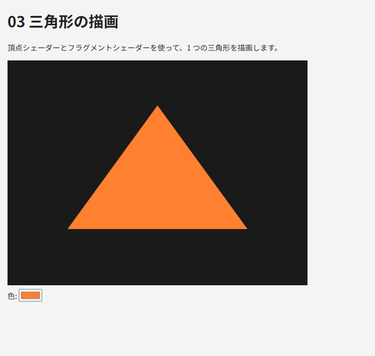

4. シェーダーの基礎
この章では、GPU 上で実行されるプログラムであるシェーダーの書き方と、それを WebGL で使う手順を説明し、最初の三角形を描画します。
4.1. 頂点シェーダーとフラグメントシェーダー
第 1 章で説明したように、WebGL で描画するには 2 種類のシェーダーが必要です。
頂点シェーダーは、頂点 1 つごとに実行されます。入力された頂点の座標を変換し、組み込み変数
gl_Positionにクリップ座標として書き込みます。フラグメントシェーダーは、ラスタライズで生成されたフラグメント 1 つごとに実行されます。そのフラグメントの色を出力します。
頂点シェーダーとフラグメントシェーダーの組を、WebGL ではプログラム（プログラムオブジェクト）と呼びます。描画の際は、使用するプログラムを gl.useProgram で選んでから描画関数を呼び出します。
最も簡単なシェーダーの例を次に示します。頂点シェーダーは受け取った 2 次元の座標をそのまま出力し、フラグメントシェーダーは uniform 変数で指定された色を出力します。
1#version 300 es
2layout(location = 0) in vec2 a_position;
3
4void main() {
5 gl_Position = vec4(a_position, 0.0, 1.0);
6}
1#version 300 es
2precision mediump float;
3
4uniform vec4 u_color;
5out vec4 outColor;
6
7void main() {
8 outColor = u_color;
9}
gl_Position の x 座標と y 座標は、何も変換しなければ、canvas の左端が -1、右端が 1、下端が -1、上端が 1 に対応します（正確には w 成分で割った後の値です。第 7 章で説明します）。
4.2. GLSL ES 3.00 の基本
シェーダーは GLSL（OpenGL Shading Language）で記述します。WebGL 2.0 で使うのは、OpenGL ES 3.0 向けの GLSL ES 3.00 です。文法は C 言語に似ており、main 関数から実行が始まります。
データ型
主なデータ型を表 4.1 に示します。
型 |
内容 |
|---|---|
|
スカラー（浮動小数点数、符号付き整数、符号なし整数、真偽値） |
|
2 ～ 4 個の |
|
|
|
2 × 2 ～ 4 × 4 の |
|
テクスチャを参照するための型（第 9 章） |
ベクトルの成分は .x、.y、.z、.w（色の場合は .r、.g、.b、.a）で参照します。v.xy や color.rgb のように複数の成分をまとめて取り出したり、v.zyx のように並べ替えたりすることもできます。これをスウィズルと呼びます。
1vec4 color = vec4(1.0, 0.5, 0.0, 1.0); // コンストラクターで作る
2vec3 rgb = color.rgb; // (1.0, 0.5, 0.0)
3vec4 position = vec4(rgb, 1.0); // vec3 と float から vec4 を作る
4vec2 swapped = color.yx; // (0.5, 1.0)
GLSL は型に厳格で、int から float への暗黙の型変換を行いません。float x = 1; はコンパイルエラーになるので、float x = 1.0; と書きます。型を変換するには float(i) のようにコンストラクターを使います。
組み込み関数
GLSL には、グラフィックスでよく使う計算のための関数が用意されています。主なものを表 4.2 に示します。これらの関数の多くは、float だけでなくベクトルにも適用でき、その場合は成分ごとに計算されます。
関数 |
内容 |
|---|---|
|
内積、外積（第 6 章） |
|
ベクトルの長さ、正規化、2 点間の距離 |
|
入射ベクトル |
|
線形補間 |
|
範囲の制限、最小値、最大値 |
|
べき乗、平方根、絶対値、切り捨て、小数部 |
|
三角関数（角度はラジアン） |
|
テクスチャから色を読み出します（第 9 章） |
変数の修飾子
シェーダーの外部とデータをやり取りする変数には、修飾子を付けて宣言します（表 4.3）。
宣言 |
意味 |
|---|---|
頂点シェーダーの |
頂点属性。バッファーから、頂点ごとに異なる値を受け取ります。 |
|
uniform 変数。JavaScript から設定し、1 回の描画の間はすべての頂点・フラグメントで同じ値になります |
頂点シェーダーの |
頂点シェーダーからフラグメントシェーダーへ渡す値。ラスタライズの際に三角形の内部で補間されます。両方のシェーダーで同じ名前と型で宣言します |
フラグメントシェーダーの |
出力する色。 |
組み込み変数
GLSL には、特別な意味を持つ変数があらかじめ用意されています（表 4.4）。
変数 |
シェーダー |
内容 |
|---|---|---|
|
頂点 |
出力。頂点のクリップ座標（ |
|
頂点 |
出力。 |
|
頂点 |
入力。処理中の頂点の番号 |
|
頂点 |
入力。インスタンス描画（第 12 章）で処理中のインスタンスの番号 |
|
フラグメント |
入力。フラグメントのウィンドウ座標（左下が原点、単位はピクセル） |
精度修飾子
GLSL ES では、浮動小数点数の精度を highp（高）、mediump（中）、lowp（低）の 3 段階で指定できます。頂点シェーダーの float の既定の精度は highp ですが、フラグメントシェーダーには既定の精度がありません。そのため、フラグメントシェーダーの先頭には、次のような精度の宣言が必須です。
1precision mediump float;
PC の GPU では、精度の指定にかかわらず 32 ビットの浮動小数点数で計算されることがほとんどです。一方、モバイル端末の GPU では mediump が 16 ビットで計算されることがあり、大きな座標値などを扱うと精度が不足します。本書では、色の計算だけを行うフラグメントシェーダーには mediump、ライティングで座標を扱うフラグメントシェーダーには highp を使います。
4.3. シェーダーをコンパイルしてプログラムを作る
シェーダーのソースコードは JavaScript の文字列として用意し、実行時に WebGL へ渡してコンパイルします。手順は次のとおりです。
gl.createShaderでシェーダーオブジェクトを作り、gl.shaderSourceでソースコードを設定し、gl.compileShaderでコンパイルします。頂点シェーダーとフラグメントシェーダーのそれぞれで 1. を行います。
gl.createProgramでプログラムオブジェクトを作り、gl.attachShaderで 2 つのシェーダーを取り付け、gl.linkProgramでリンクします。
コンパイルやリンクに失敗しても例外は発生しないので、gl.getShaderParameter と gl.getProgramParameter で結果を確認し、失敗した場合はエラーメッセージ（情報ログ）を取得します。本書のサンプルでは、この処理を次の 2 つの関数にまとめています。
54function showError(message) {
55 const element = document.getElementById("error");
56 element.textContent += message + "\n";
57 element.hidden = false;
58}
59
60// シェーダーを作成してコンパイルする
61function createShader(gl, type, source) {
62 const shader = gl.createShader(type);
63 gl.shaderSource(shader, source);
64 gl.compileShader(shader);
65 if (!gl.getShaderParameter(shader, gl.COMPILE_STATUS)) {
66 const log = gl.getShaderInfoLog(shader);
67 gl.deleteShader(shader);
68 throw new Error("シェーダーのコンパイルに失敗しました。\n" + log);
69 }
70 return shader;
71}
72
73// 頂点シェーダーとフラグメントシェーダーをリンクしてプログラムを作る
74function createProgram(gl, vertexSource, fragmentSource) {
75 const vertexShader = createShader(gl, gl.VERTEX_SHADER, vertexSource);
76 const fragmentShader = createShader(gl, gl.FRAGMENT_SHADER, fragmentSource);
77 const program = gl.createProgram();
78 gl.attachShader(program, vertexShader);
79 gl.attachShader(program, fragmentShader);
80 gl.linkProgram(program);
81 // リンク後はシェーダーオブジェクトを削除してよい
82 gl.deleteShader(vertexShader);
83 gl.deleteShader(fragmentShader);
84 if (!gl.getProgramParameter(program, gl.LINK_STATUS)) {
85 const log = gl.getProgramInfoLog(program);
86 gl.deleteProgram(program);
87 throw new Error("プログラムのリンクに失敗しました。\n" + log);
88 }
89 return program;
90}
リンクが済んだら、シェーダーオブジェクトは不要なので削除できます（プログラムには影響しません）。
4.4. uniform 変数を設定する
uniform 変数に値を設定するには、まず gl.getUniformLocation で変数の場所（ロケーション）を取得し、次に gl.useProgram でプログラムを選んでから、型に応じた gl.uniform* 関数を呼び出します。
1const colorLocation = gl.getUniformLocation(program, "u_color"); // 初期化時に 1 回だけ
2// ...
3gl.useProgram(program);
4gl.uniform4f(colorLocation, 1.0, 0.5, 0.2, 1.0); // vec4 に 4 つの float を設定する
主な関数を表 4.5 に示します。関数名の数字は成分の数、f は float、i は int、末尾の v は配列で値を渡すことを表します。
GLSL の型 |
関数の例 |
|---|---|
|
|
|
|
|
|
|
|
|
|
|
|
uniform 変数の値はプログラムごとに保存され、変更するまで保持されます。毎回の描画で設定し直す必要はありません。
4.5. よくある失敗
シェーダーのコンパイルエラーは、情報ログを読めば原因が分かることがほとんどです。初めのうちによく起きる失敗を表 4.6 に示します。
現象 |
原因と対処 |
|---|---|
|
|
|
フラグメントシェーダーに |
|
GLSL ES 1.00 の書き方をしています。 |
|
整数と浮動小数点数を混ぜています。 |
|
名前の綴りが違います。または、シェーダー内で使われていない uniform 変数がコンパイラーの最適化で削除されました。 |
リンクエラー |
頂点シェーダーの |
4.6. GLSL ES 1.00 との違い
WebGL 1.0 向けの資料では、GLSL ES 1.00 でシェーダーが書かれています。WebGL 2.0 でも #version 300 es を書かなければ GLSL ES 1.00 として扱われますが、本書では GLSL ES 3.00 だけを使います。主な書き方の違いを表 4.7 に示します。
項目 |
GLSL ES 1.00 |
GLSL ES 3.00 |
|---|---|---|
バージョンの指定 |
なし |
1 行目に |
頂点属性 |
|
|
頂点シェーダーの出力 |
|
|
フラグメントシェーダーの入力 |
|
|
色の出力 |
|
|
テクスチャの読み出し |
|
|
頂点属性の location の指定 |
JavaScript で |
|
4.7. サンプル
03_triangle.html は、この章で説明したシェーダーを使って 1 つの三角形を描画します。色は画面下のカラーピッカーで変更でき、変更すると uniform 変数 u_color が更新されます。頂点データをバッファーに転送して VAO に設定する部分（main 関数の 2. と 3.）は、第 5 章で説明します。

図 4.1 03_triangle.html の実行結果
サンプル全体を次に示します。
1<!DOCTYPE html>
2<html lang="ja">
3<head>
4<meta charset="utf-8">
5<meta name="viewport" content="width=device-width, initial-scale=1">
6<title>03 三角形の描画</title>
7<style>
8 body { margin: 16px; font-family: sans-serif; background: #f4f4f4; color: #222; }
9 canvas { display: block; background: #000; max-width: 100%; }
10 #error { color: #b00; white-space: pre-wrap; }
11 .controls { margin: 8px 0; }
12</style>
13</head>
14<body>
15<h1>03 三角形の描画</h1>
16<p>頂点シェーダーとフラグメントシェーダーを使って、1 つの三角形を描画します。</p>
17<pre id="error" hidden></pre>
18<canvas id="canvas" width="640" height="480"></canvas>
19<div class="controls">
20 <label>色: <input type="color" id="color" value="#ff8030"></label>
21</div>
22
23<script>
24"use strict";
25
26// ---- シェーダー ----
27// 「#version 300 es」は必ずソースの 1 行目に書く（前に空行や空白を入れない）
28const VERTEX_SHADER_SOURCE = `#version 300 es
29// 頂点属性: バッファーから頂点ごとに 1 つずつ値を受け取る
30layout(location = 0) in vec2 a_position;
31
32void main() {
33 // gl_Position にクリップ座標を書き込む
34 gl_Position = vec4(a_position, 0.0, 1.0);
35}
36`;
37
38const FRAGMENT_SHADER_SOURCE = `#version 300 es
39// フラグメントシェーダーでは float の精度の指定が必須
40precision mediump float;
41
42// uniform 変数: 1 回の描画の間、すべての頂点・フラグメントで同じ値
43uniform vec4 u_color;
44
45// 出力する色
46out vec4 outColor;
47
48void main() {
49 outColor = u_color;
50}
51`;
52
53// ---- 共通の補助関数 ----
54function showError(message) {
55 const element = document.getElementById("error");
56 element.textContent += message + "\n";
57 element.hidden = false;
58}
59
60// シェーダーを作成してコンパイルする
61function createShader(gl, type, source) {
62 const shader = gl.createShader(type);
63 gl.shaderSource(shader, source);
64 gl.compileShader(shader);
65 if (!gl.getShaderParameter(shader, gl.COMPILE_STATUS)) {
66 const log = gl.getShaderInfoLog(shader);
67 gl.deleteShader(shader);
68 throw new Error("シェーダーのコンパイルに失敗しました。\n" + log);
69 }
70 return shader;
71}
72
73// 頂点シェーダーとフラグメントシェーダーをリンクしてプログラムを作る
74function createProgram(gl, vertexSource, fragmentSource) {
75 const vertexShader = createShader(gl, gl.VERTEX_SHADER, vertexSource);
76 const fragmentShader = createShader(gl, gl.FRAGMENT_SHADER, fragmentSource);
77 const program = gl.createProgram();
78 gl.attachShader(program, vertexShader);
79 gl.attachShader(program, fragmentShader);
80 gl.linkProgram(program);
81 // リンク後はシェーダーオブジェクトを削除してよい
82 gl.deleteShader(vertexShader);
83 gl.deleteShader(fragmentShader);
84 if (!gl.getProgramParameter(program, gl.LINK_STATUS)) {
85 const log = gl.getProgramInfoLog(program);
86 gl.deleteProgram(program);
87 throw new Error("プログラムのリンクに失敗しました。\n" + log);
88 }
89 return program;
90}
91
92// "#rrggbb" 形式の文字列を 0 から 1 の RGB の配列に変換する
93function parseColor(hex) {
94 return [1, 3, 5].map((i) => parseInt(hex.slice(i, i + 2), 16) / 255);
95}
96
97// ---- メイン処理 ----
98function main() {
99 const canvas = document.getElementById("canvas");
100 const gl = canvas.getContext("webgl2");
101 if (!gl) {
102 showError("このブラウザーは WebGL 2.0 に対応していません。");
103 canvas.hidden = true;
104 return;
105 }
106
107 // 1. シェーダープログラムを作る
108 const program = createProgram(gl, VERTEX_SHADER_SOURCE, FRAGMENT_SHADER_SOURCE);
109 const colorLocation = gl.getUniformLocation(program, "u_color");
110
111 // 2. 頂点データ（クリップ座標の x, y）をバッファーに転送する
112 const positions = new Float32Array([
113 0.0, 0.6, // 上
114 -0.6, -0.5, // 左下
115 0.6, -0.5, // 右下
116 ]);
117 const buffer = gl.createBuffer();
118 gl.bindBuffer(gl.ARRAY_BUFFER, buffer);
119 gl.bufferData(gl.ARRAY_BUFFER, positions, gl.STATIC_DRAW);
120
121 // 3. VAO に頂点属性の読み出し方を記録する
122 const vao = gl.createVertexArray();
123 gl.bindVertexArray(vao);
124 gl.enableVertexAttribArray(0); // location = 0 の a_position を有効にする
125 gl.vertexAttribPointer(0, 2, gl.FLOAT, false, 0, 0); // float を 2 個ずつ読む
126 gl.bindVertexArray(null);
127
128 // 4. 描画する
129 function render() {
130 gl.viewport(0, 0, canvas.width, canvas.height);
131 gl.clearColor(0.1, 0.1, 0.1, 1.0);
132 gl.clear(gl.COLOR_BUFFER_BIT);
133
134 gl.useProgram(program);
135 const [r, g, b] = parseColor(document.getElementById("color").value);
136 gl.uniform4f(colorLocation, r, g, b, 1.0);
137
138 gl.bindVertexArray(vao);
139 gl.drawArrays(gl.TRIANGLES, 0, 3); // 頂点 0 番から 3 個を三角形として描画
140 gl.bindVertexArray(null);
141 }
142
143 render();
144 // 色が変わったときだけ描画し直す（アニメーションしないので描画ループは不要）
145 document.getElementById("color").addEventListener("input", render);
146}
147
148try {
149 main();
150} catch (error) {
151 showError(error.message);
152}
153</script>
154</body>
155</html>